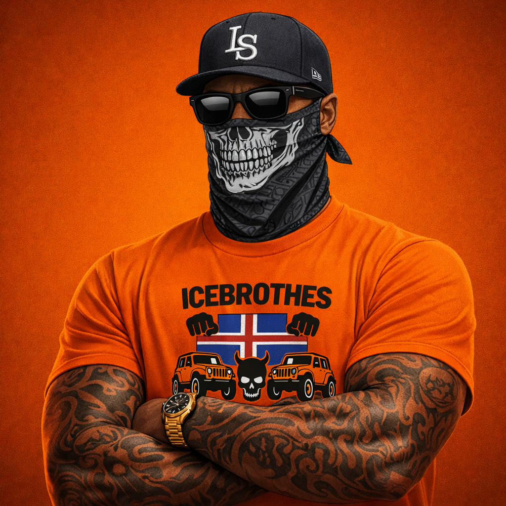
SævarK
Stofnandi Icebrothes.
STOFNAÐ 27. MARS 2015 — LOS SANTOS / AKUREYRI, ICELAND
Icebrothes® er íslenskt GTA crew byggt á bræðralagi, viðburðum, sérsmíðuðum bílum og sterkum húmór.
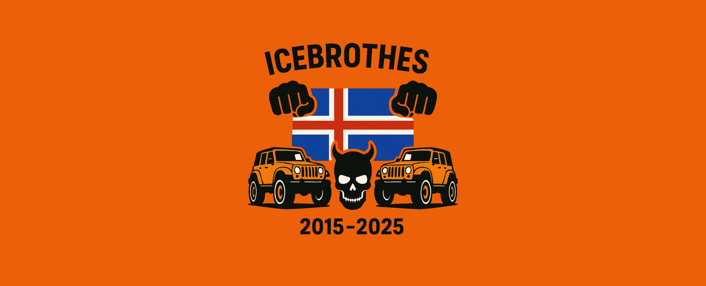
Um crewið
Icebrothes® er íslenskt GTA crew sem varð til úr vináttu, innanhússhúmor, þemaviðburðum, bílum og sterkri sjónrænni sjálfsmynd. Það sem byrjaði sem innsláttarvilla varð að legendary innanhússgríni og síðan að alvöru crew nafni sem var aldrei leiðrétt.
Þetta er ekki eitthvað random lobby group. Icebrothes® hefur sameiginlegt útlit, endurteknar hefðir og áralanga sögu sem byggir á íslenskri sjálfsmynd, bræðralagi, bílamenningu og dökkum premium stíl þar sem appelsínugulur er einkennisliturinn.
Meðlimir

Stofnandi Icebrothes.
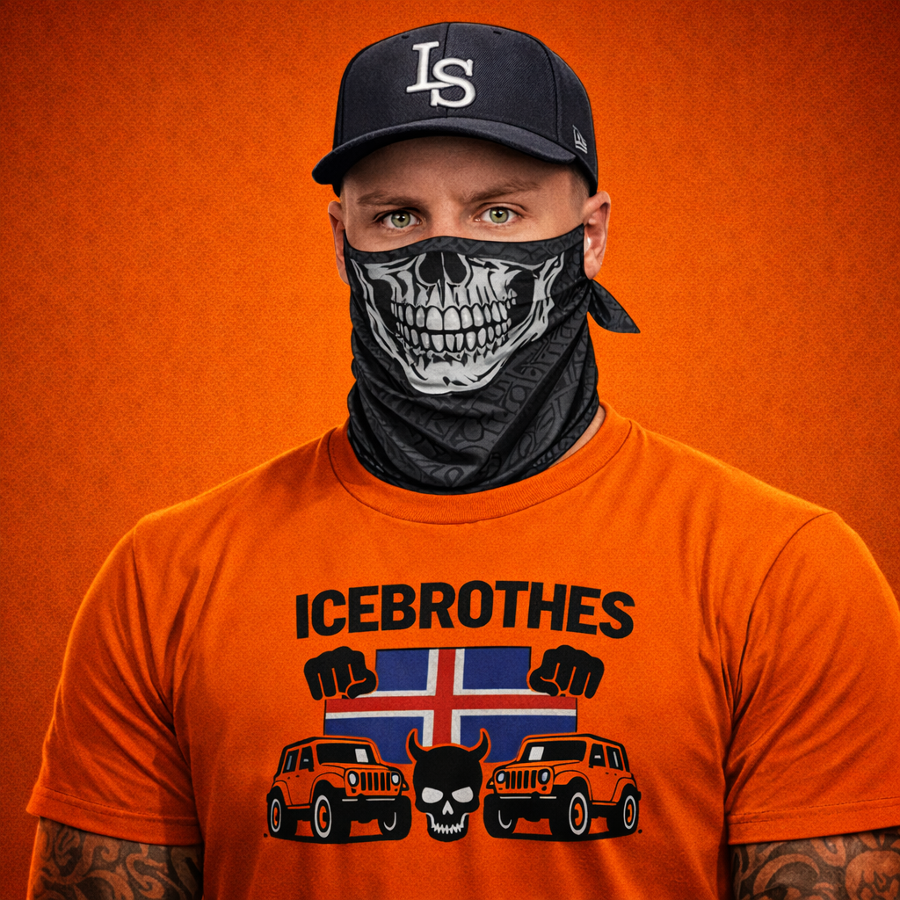
Eigandi og CEO Kristján Air
Fundarstjóri
Fjármálastjóri
Professional air support.
Kvótakóngur
Oppressor Mk II
Starfsmaður Kristján Airs
Umsjón fasteigna
Bílaumhald
Atkvæðastjóri
Eignahaldsstýring og lánamál Icebrothes.
Búnaður
Þetta er útlitið sem gerir Icebrothes strax auðþekkjanlegt: samræmdur búningur, einkennisbíllinn og bæði merkin sem hafa fylgt crewinu.
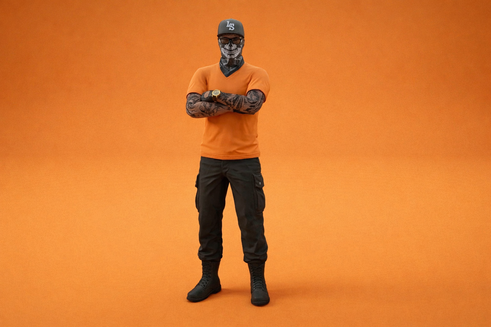
Búningur
Fastur búningur Icebrothes frá stofnun. Svartar cargo buxur, appelsínugulur bolur, LS derhúfa og hauskúpu bandana með sólgleraugum.
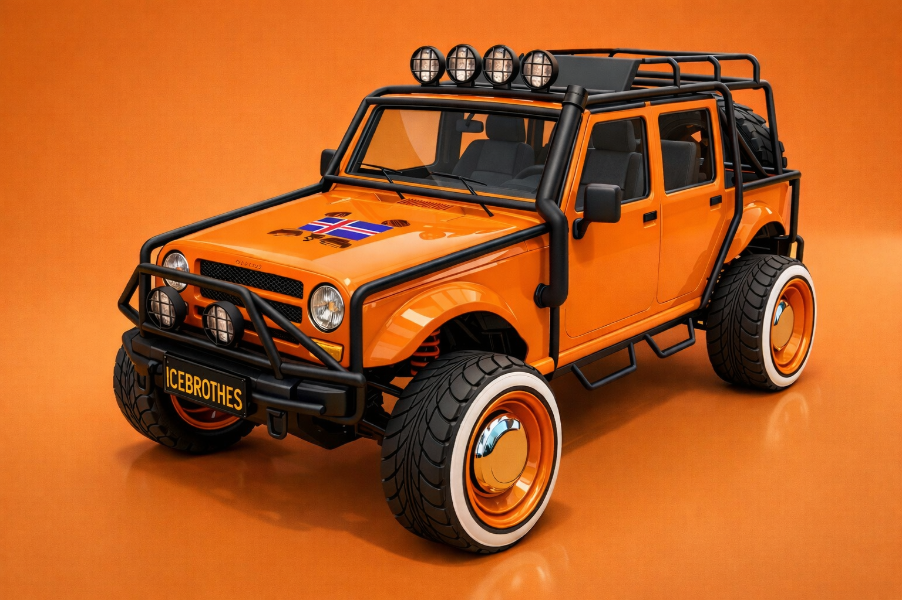
Crew bíll
Crew bíll Icebrothes frá upphafi. Merryweather Mesa í crewlit, svörtu þema og með lógóið á húddinu.

Merki
Núverandi merki Icebrothes. Á síðunni þess sérðu líka hvernig lógóið þróaðist frá hráu prototype merki yfir í OG útgáfuna og svo í núverandi identity.
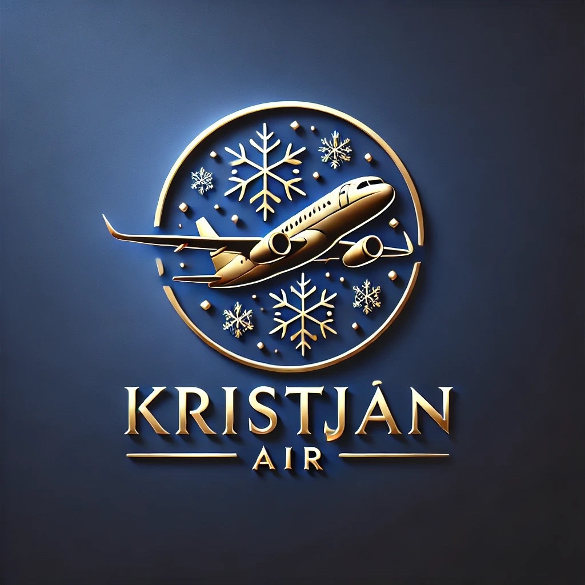
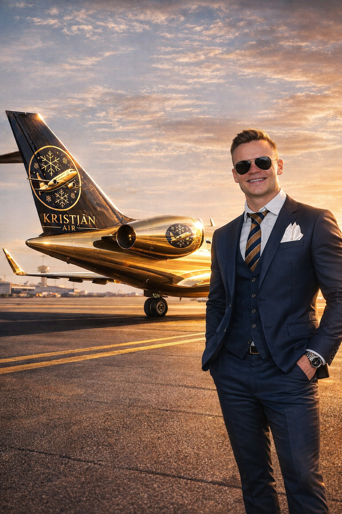
Kristján Air er innra airline sub-brand Icebrothes®, í eigu og rekstri Kristjáns. Þetta er raunverulegur hluti af crew lore-inu, ekki bara eitthvert aukagrín.
Merkið byggir á navy og gylltu premium airline útliti, gullinni einkaþotu og einni varanlegri óvissu: enginn veit nokkurn tímann hvort flugið endar í lúxus eða hörmung.
Kristján Air sér um að koma Icebrothes meðlimum milli staða á sérstökum viðburðum og hefur sérhæft sig í lendingum á alls konar stöðum, á meðan öryggi farþega er alltaf sagt vera í forgangi.
Kristján býður upp á kampavín og vindla meðan flugi stendur, uppfærir farþega reglulega um stöðu flugsins og selur upplifunina eins og um fyrsta flokks þjónustu sé að ræða, jafnvel þegar útkoman virðist stundum mjög vafasöm.
Eini starfsmaðurinn er Fúsi "Hagrid", sem var ráðinn til Kristján Air vegna vaxandi vinsælda fyrirtækisins.
Viðburðir
Hér eru eventin sem hafa verið haldin, með myndum úr möppunni og stuttu yfirliti um hvað fór fram á hverju kvöldi.
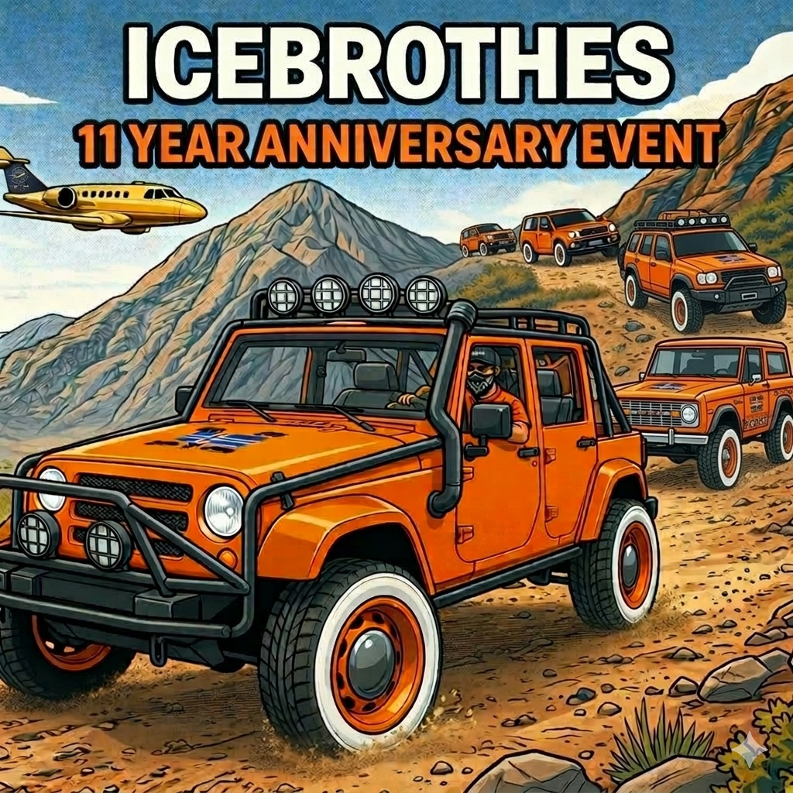
Hver meðlimur valdi sinn eigin bíl og breytti honum í Icebrothes útgáfu með appelsínugulum, svörtum og hvítum smáatriðum og crew lógói.
Allir mættu við Mount Chilliad, sýndu bílana sína, kusu um besta custom bílinn og keyrðu síðan saman upp á topp þar sem sigurvegari var krýndur.
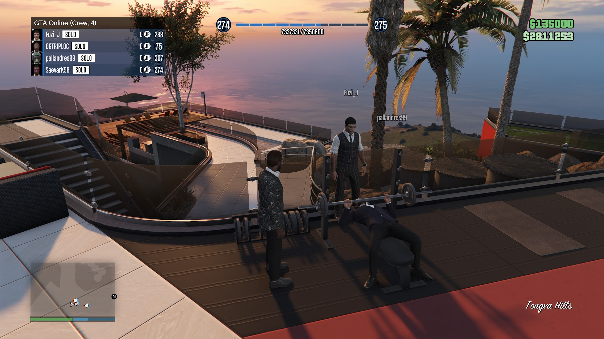
Kvöldið byrjaði classy í mansioninu hjá SævarK með drykkjum, pottfundi og umræðu um stöðu og framtíð Icebrothes®.
Síðan tók við Icebrothes Kahoot, feluleikur inni í húsinu og undirbúningur fyrir fjallaferð þar sem stemningin fór hratt úr fínu yfir í kaos.

Allir mættu í hrekkjavökubúningum og með ógnvekjandi bíla til að stilla sér upp og leggja af stað í spooky cruise um Paleto Bay í myrkrinu.
Að lokinni ferðinni var keppt um besta búninginn og mest ógnvekjandi bílinn, með bónusstigum fyrir þá sem náðu vel heppnuðum mugger-árásum.

Crewið tók Mount Gordo á rafmagnshjólum, stoppaði við vatnið til að veiða og reyndi síðan að stökkva út á eyjuna við vitann.
Eftir hringinn tóku leigubílar og flug yfir, áður en kvöldinu lauk með Icebrothes fundi í penthouse, stigakerfi og kosningu um besta hjóla-outfitið.
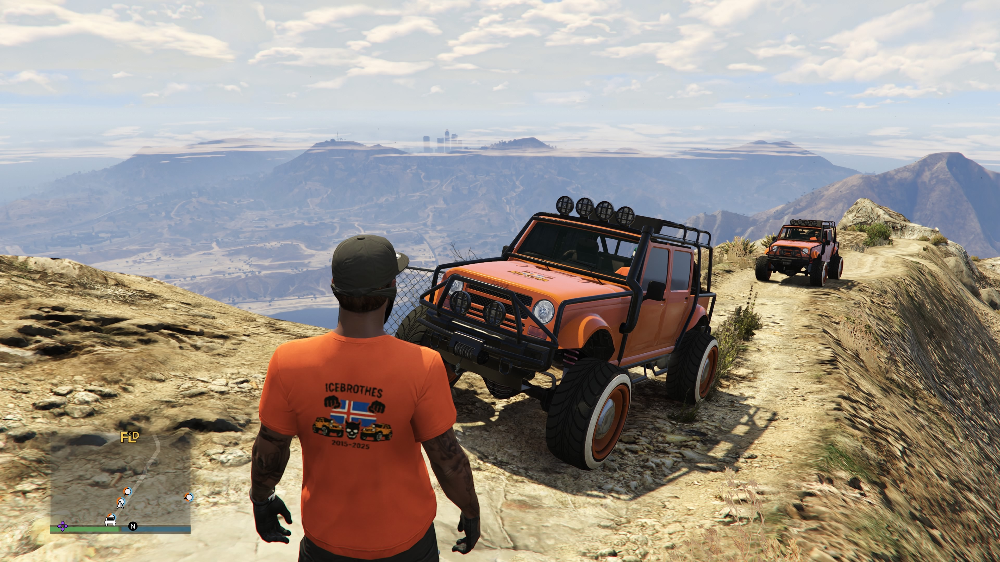
Crewið hittist í fullu Icebrothes outfiti og mætti á appelsínugulum og svörtum Canis Mesa til að fagna 10 árum frá stofnun crewsins.
Kvöldið snerist um sameiginlegan akstur, hópmynd á góðum stað og stuttan fund í agency hjá SævarK til að marka tímamótin.
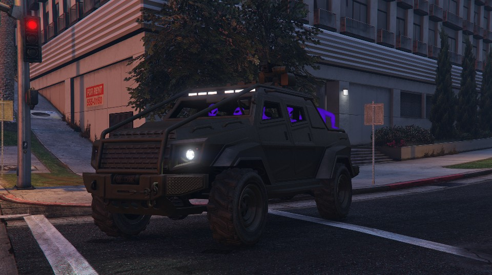
Allir mættu í purple alien suit, fóru saman á bílum og tóku lobbyið yfir með fullu Icebrothes presence.
Kvöldið snerist um að asserta dominance, valda usla og keyra þemað alla leið þar til Los Santos var komið í rúst.

Meðlimir mættu í fjallagöngubúnaði, hittust á merktum stað og lögðu af stað gangandi upp Mount Chilliad með aðeins hníf á sér.
Eventið snerist um að halda hópnum saman, lifa af fjallaljón og ná á toppinn án þess að einhver færi fram úr eða eyðilegði stemninguna.

Keppni þar sem markmiðið var að mæta í rómantískasta búningnum og á rómantískasta bílnum.
Kiddi, Fúsi og Sævar tóku þátt á meðan Valur hélt utan um stigahald og úrslit kvöldsins.

Icebrothes hittust eftir miðnætti á gamlárskvöldi, fóru upp á Mount Chilliad í snjónum og sprengdu flugelda til að fagna nýju ári.
Þegar allt var lokað út af Covid tók Kristján Air svo hópinn í klúbbinn í GTA Online og lenti á hestavellinum eins og ekkert væri eðlilegra.
Myndir
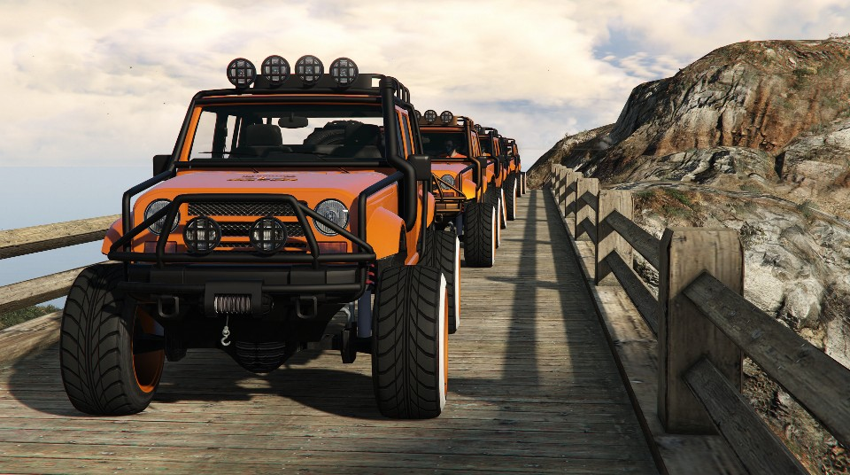
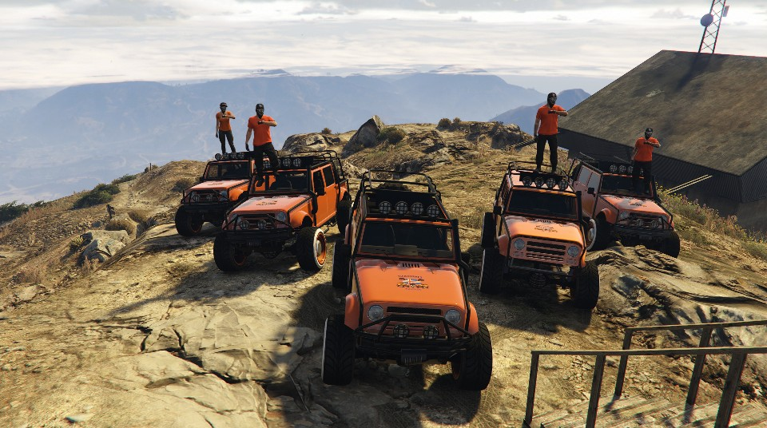
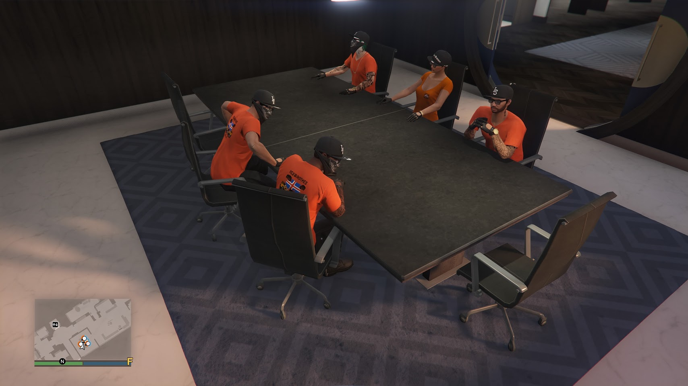
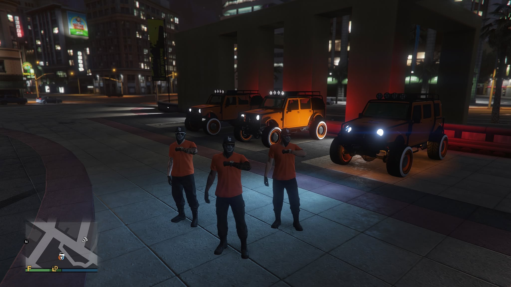
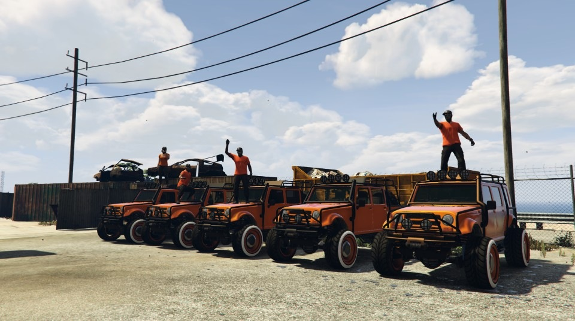
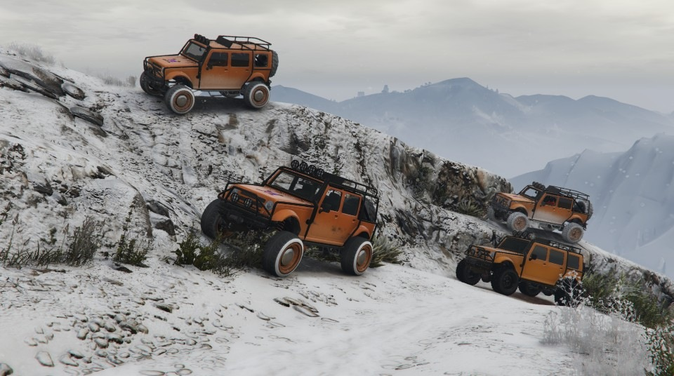